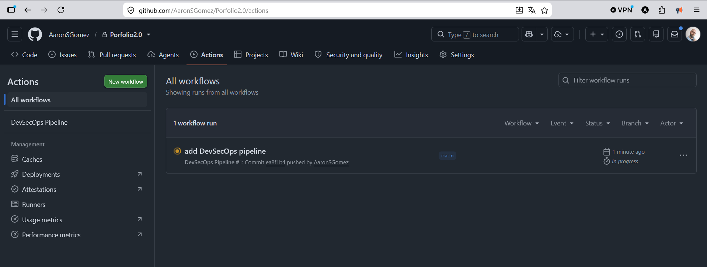
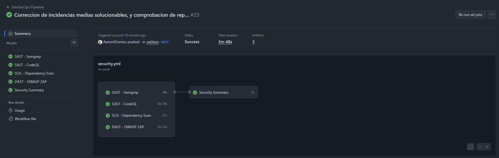

Integración Continua Segura
Diseño, Configuración y Montaje del Pipeline DevSecOps
Este documento detalla el proceso completo de creación, depuración de incidencias y puesta en marcha del pipeline de seguridad en GitHub Actions. Se documenta la resolución de errores reales de sintaxis, permisos de API y optimización de parseo de logs.
📋 Estructura y Flujo del Apartado DevSecOps
A continuación se detallan las fases y pasos interactivos que componen la memoria de laboratorio del bloque DevSecOps. Puedes navegar secuencialmente por ellos usando el panel de control flotante fijo:
🧱 Incidencia de Detección de Workflows en GitHub
Al inicializar el flujo automatizado en GitHub, la consola de Actions no reconocía ningún descriptor de tareas, mostrando el asistente genérico de inicialización web de la plataforma.

Captura: Interfaz de GitHub Actions indicando la ausencia de workflows detectados en el repositorio.
Falta del punto inicial en la carpeta de configuración: La raíz del problema fue que Visual Studio Code creó la carpeta de workflows sin el punto inicial obligatorio (github/workflows/ en lugar de .github/workflows/). Debido a esta sintaxis incorrecta, el analizador de GitHub ignoró por completo los archivos YAML de configuración del pipeline, impidiendo su automatización.
Solución Técnica Aplicada
Se renombró de manera estructurada el directorio raíz a .github/ en el entorno de desarrollo local y se movieron los descriptores del pipeline dentro de su subdirectorio de workflows. Tras realizar el commit y empujar los cambios, GitHub Actions indexó los jobs y comenzó a ejecutarlos automáticamente.

Captura: Estructura de directorios corregida y sincronizada en la interfaz web de GitHub.
🛠️ Selección de Herramientas del Ciclo DevSecOps
El diseño de seguridad del software (SDLC) requiere la integración de tres tipos de análisis automatizados dentro del flujo de integración continua:
- SAST (Static Application Security Testing): Inicialmente se contempló únicamente GitHub CodeQL. Sin embargo, debido a las limitaciones funcionales de subir reportes a las pestañas de seguridad en repositorios personales privados sin licencias Advanced Security, se optó por incorporar Semgrep Community Edition como herramienta SAST principal por ser open-source, flexible, compatible con pipelines locales y tener soporte completo para JavaScript/TypeScript.
- SCA (Software Composition Analysis): Integración de
npm auditen el frontend del portfolio para rastrear vulnerabilidades conocidas en dependencias del gestor Node.js, exportando reportes detallados en formato estructurado JSON. - DAST (Dynamic Application Security Testing): Configuración de OWASP ZAP Baseline Scan a través de una acción del pipeline que realiza un escaneo de seguridad pasivo perimetral apuntando al dominio de producción (
https://asga.vercel.app).
📄 Descriptor del Pipeline Final (`security.yml`)
Configuración YAML unificada y optimizada que define los trabajos de escaneo perimetral, la captura estructurada de variables en los outputs de cada job y la unificación de alertas de criticidad en el resumen final.
name: DevSecOps Pipeline
on:
push:
branches: [main]
pull_request:
branches: [main]
permissions:
contents: read
pull-requests: write
issues: write
jobs:
##############################################################################
# SEMGREP
##############################################################################
semgrep:
name: SAST - Semgrep
runs-on: ubuntu-latest
outputs:
findings: {{ steps.count.outputs.findings }}
critical: {{ steps.count.outputs.critical }}
high: {{ steps.count.outputs.high }}
medium: {{ steps.count.outputs.medium }}
low: {{ steps.count.outputs.low }}
steps:
- uses: actions/checkout@v4
- name: Setup Python
uses: actions/setup-python@v5
with:
python-version: "3.12"
- name: Install Semgrep
run: |
python -m pip install --upgrade pip
pip install semgrep
- name: Run Semgrep
run: |
semgrep \
--config p/javascript \
--json \
--output semgrep.json \
. || true
- name: Count findings
id: count
run: |
HIGH=$(jq '[.results[] | select(.extra.severity=="ERROR")] | length' semgrep.json)
MEDIUM=$(jq '[.results[] | select(.extra.severity=="WARNING")] | length' semgrep.json)
LOW=$(jq '[.results[] | select(.extra.severity=="INFO")] | length' semgrep.json)
CRITICAL=0
TOTAL=$((CRITICAL+HIGH+MEDIUM+LOW))
echo "findings=$TOTAL" >> $GITHUB_OUTPUT
echo "critical=$CRITICAL" >> $GITHUB_OUTPUT
echo "high=$HIGH" >> $GITHUB_OUTPUT
echo "medium=$MEDIUM" >> $GITHUB_OUTPUT
echo "low=$LOW" >> $GITHUB_OUTPUT
{
echo "## ✔ SAST - Semgrep"
echo ""
echo "**Findings:** $TOTAL"
} >> $GITHUB_STEP_SUMMARY
- name: Upload Semgrep report
uses: actions/upload-artifact@v4
if: always()
with:
name: semgrep-report
path: semgrep.json
if-no-files-found: ignore
##############################################################################
# CODEQL
##############################################################################
codeql:
name: SAST - CodeQL
runs-on: ubuntu-latest
continue-on-error: true
outputs:
findings: {{ steps.summary.outputs.findings }}
steps:
- uses: actions/checkout@v4
- name: Initialize CodeQL
uses: github/codeql-action/init@v3
with:
languages: javascript
- name: Analyze
continue-on-error: true
uses: github/codeql-action/analyze@v3
with:
upload: false
- name: Summary
if: always()
id: summary
run: |
echo "findings=0" >> $GITHUB_OUTPUT
{
echo "## ✔ SAST - CodeQL"
echo ""
echo "Analysis completed successfully"
} >> $GITHUB_STEP_SUMMARY
##############################################################################
# SCA
##############################################################################
sca:
name: SCA - Dependency Scan
runs-on: ubuntu-latest
outputs:
findings: {{ steps.audit.outputs.findings }}
critical: {{ steps.audit.outputs.critical }}
high: {{ steps.audit.outputs.high }}
medium: {{ steps.audit.outputs.medium }}
low: {{ steps.audit.outputs.low }}
steps:
- uses: actions/checkout@v4
- name: Setup Node
uses: actions/setup-node@v4
with:
node-version: 22
- name: Install dependencies
working-directory: frontend
run: npm ci
- name: Run npm audit
working-directory: frontend
run: |
npm audit --json > audit.json || true
- name: Count findings
id: audit
working-directory: frontend
run: |
CRITICAL=$(jq '.metadata.vulnerabilities.critical // 0' audit.json)
HIGH=$(jq '.metadata.vulnerabilities.high // 0' audit.json)
MEDIUM=$(jq '.metadata.vulnerabilities.moderate // 0' audit.json)
LOW=$(jq '.metadata.vulnerabilities.low // 0' audit.json)
TOTAL=$((CRITICAL+HIGH+MEDIUM+LOW))
echo "findings=$TOTAL" >> $GITHUB_OUTPUT
echo "critical=$CRITICAL" >> $GITHUB_OUTPUT
echo "high=$HIGH" >> $GITHUB_OUTPUT
echo "medium=$MEDIUM" >> $GITHUB_OUTPUT
echo "low=$LOW" >> $GITHUB_OUTPUT
{
echo "## ✔ SCA - Dependency Scan"
echo ""
echo "**Findings:** $TOTAL"
} >> $GITHUB_STEP_SUMMARY
- name: Upload audit
uses: actions/upload-artifact@v4
with:
name: npm-audit-report
path: frontend/audit.json
##############################################################################
# DAST
##############################################################################
dast:
name: DAST - OWASP ZAP
runs-on: ubuntu-latest
if: always()
outputs:
findings: {{ steps.zap.outputs.findings }}
high: {{ steps.zap.outputs.high }}
medium: {{ steps.zap.outputs.medium }}
low: {{ steps.zap.outputs.low }}
steps:
- name: Run ZAP
id: zapscan
continue-on-error: true
uses: zaproxy/action-baseline@v0.12.0
with:
target: "https://asga.vercel.app"
token: ""
- name: Count findings
id: zap
run: |
if [ -f "report_md.md" ]; then
HIGH=$(grep -i "High" report_md.md | awk -F'|' '{print $3}' | tr -dc '0-9')
MEDIUM=$(grep -i "Medium" report_md.md | awk -F'|' '{print $3}' | tr -dc '0-9')
LOW=$(grep -i "Low" report_md.md | awk -F'|' '{print $3}' | tr -dc '0-9')
else
HIGH=0
MEDIUM=0
LOW=0
fi
HIGH=${HIGH:-0}
MEDIUM=${MEDIUM:-0}
LOW=${LOW:-0}
TOTAL=$((HIGH + MEDIUM + LOW))
echo "findings=$TOTAL" >> "$GITHUB_OUTPUT"
echo "high=$HIGH" >> "$GITHUB_OUTPUT"
echo "medium=$MEDIUM" >> "$GITHUB_OUTPUT"
echo "low=$LOW" >> "$GITHUB_OUTPUT"
{
echo "## ✔ DAST - OWASP ZAP"
echo ""
echo "**Findings:** $TOTAL"
} >> "$GITHUB_STEP_SUMMARY"
- name: Upload ZAP report
uses: actions/upload-artifact@v4
if: always()
with:
name: zap-report
path: |
report_html.html
report_json.json
report_md.md
if-no-files-found: ignore
##############################################################################
# FINAL REPORT & ISSUE GENERATION
##############################################################################
security-report:
name: Security Summary
runs-on: ubuntu-latest
if: always()
needs:
- semgrep
- codeql
- sca
- dast
steps:
- uses: actions/checkout@v4
- name: Create Summary and Evaluate Issues
env:
GH_TOKEN: {{ secrets.GITHUB_TOKEN }}
run: |
SEMGREP_FINDINGS={{ needs.semgrep.outputs.findings || 0 }}
SEMGREP_CRITICAL={{ needs.semgrep.outputs.critical || 0 }}
SEMGREP_HIGH={{ needs.semgrep.outputs.high || 0 }}
SEMGREP_MEDIUM={{ needs.semgrep.outputs.medium || 0 }}
SEMGREP_LOW={{ needs.semgrep.outputs.low || 0 }}
SCA_FINDINGS={{ needs.sca.outputs.findings || 0 }}
SCA_CRITICAL={{ needs.sca.outputs.critical || 0 }}
SCA_HIGH={{ needs.sca.outputs.high || 0 }}
SCA_MEDIUM={{ needs.sca.outputs.medium || 0 }}
SCA_LOW={{ needs.sca.outputs.low || 0 }}
DAST_FINDINGS={{ needs.dast.outputs.findings || 0 }}
DAST_HIGH={{ needs.dast.outputs.high || 0 }}
DAST_MEDIUM={{ needs.dast.outputs.medium || 0 }}
DAST_LOW={{ needs.dast.outputs.low || 0 }}
CODEQL_FINDINGS={{ needs.codeql.outputs.findings || 0 }}
TOTAL_FINDINGS=$(( SEMGREP_FINDINGS + SCA_FINDINGS + DAST_FINDINGS ))
TOTAL_CRITICAL=$(( SEMGREP_CRITICAL + SCA_CRITICAL ))
TOTAL_HIGH=$(( SEMGREP_HIGH + SCA_HIGH + DAST_HIGH ))
TOTAL_MEDIUM=$(( SEMGREP_MEDIUM + SCA_MEDIUM + DAST_MEDIUM ))
TOTAL_LOW=$(( SEMGREP_LOW + SCA_LOW + DAST_LOW ))
{
echo "# 🛡️ DevSecOps Security Report"
echo ""
echo "| Tool | Status | Findings | Critical | High | Medium | Low |"
echo "|------|--------|----------|----------|------|--------|-----|"
echo "| Semgrep | ✅ | $SEMGREP_FINDINGS | $SEMGREP_CRITICAL | $SEMGREP_HIGH | $SEMGREP_MEDIUM | $SEMGREP_LOW |"
echo "| CodeQL | ✅ | $CODEQL_FINDINGS | N/A | N/A | N/A | N/A |"
echo "| npm audit | ✅ | $SCA_FINDINGS | $SCA_CRITICAL | $SCA_HIGH | $SCA_MEDIUM | $SCA_LOW |"
echo "| OWASP ZAP | ✅ | $DAST_FINDINGS | 0 | $DAST_HIGH | $DAST_MEDIUM | $DAST_LOW |"
echo "| **TOTAL** | 🛡️ | **$TOTAL_FINDINGS** | **$TOTAL_CRITICAL** | **$TOTAL_HIGH** | **$TOTAL_MEDIUM** | **$TOTAL_LOW** |"
echo ""
echo "### Generated artifacts"
echo "- semgrep-report"
echo "- npm-audit-report"
echo "- zap-report"
} >> $GITHUB_STEP_SUMMARY
TRIGGER_ISSUE=$(( TOTAL_CRITICAL + TOTAL_HIGH ))
if [ "$TRIGGER_ISSUE" -gt 0 ]; then
echo "Se han detectado vulnerabilidades graves ($TRIGGER_ISSUE en total). Creando issue..."
BODY_TEXT=$(cat <<EOF
## ⚠️ Alertas de Seguridad Críticas / Altas Detectadas en el Pipeline
Se han encontrado hallazgos que requieren atención inmediata en el último análisis automatizado:
- **Vulnerabilidades Críticas:** $TOTAL_CRITICAL
- **Vulnerabilidades Altas:** $TOTAL_HIGH
### Resumen de hallazgos por herramienta:
- **Semgrep (SAST):** $SEMGREP_CRITICAL Críticas, $SEMGREP_HIGH Altas.
- **npm audit (SCA):** $SCA_CRITICAL Críticas, $SCA_HIGH Altas.
- **OWASP ZAP (DAST):** $DAST_HIGH Altas.
Por favor, descargue los reportes adjuntos en los *Artifacts* de la ejecución de este workflow para mitigar los fallos identificados.
EOF
)
gh issue create \
--title "🔴 Security Alert: $TRIGGER_ISSUE Critical/High Vulnerabilities Found" \
--body "$BODY_TEXT" \
--label "security,bug"
else
echo "No se encontraron vulnerabilidades críticas o altas. No se requiere abrir un issue."
fi🔐 Depuración de Privilegios e Incidencias en la API de GitHub
Durante la inicialización y el enganche de herramientas, se presentaron fallos críticos de acceso y autenticación que bloquearon el normal desarrollo del pipeline:
Error arrojado por el runner: Resource not accessible by integration y Code scanning is not enabled for this repository.
Causa raíz: Advanced Security de GitHub restringe de forma predeterminada la subida de resultados estáticos al visor de seguridad en repositorios que sean de carácter privado y de cuentas personales.
Solución aplicada: Se reestructuró la tarea en el YAML para realizar la compilación y el análisis estático localmente, deshabilitando la subida de resultados a la API web añadiendo el parámetro upload: false e indicando al runner ignorar alertas de entorno con continue-on-error: true.
Error arrojado por el CLI: Resource not accessible by integration al ejecutar la utilidad de línea de comandos gh issue create en el reporte de seguridad final.
Causa raíz: El token de autenticación asignado al entorno del pipeline (secrets.GITHUB_TOKEN) cuenta nativamente únicamente con privilegios de lectura.
Solución aplicada: Se declaró e inyectó de forma explícita el bloque global de permisos en el manifiesto YAML habilitando permisos de escritura específicos para el gestor de tareas y incidencias:
permissions: issues: write, pull-requests: write.
Errores arrojados por el runner:
fatal: not a git repository (or any of the parent directories): .gitcould not add label: 'security' not found
Causa raíz:
En primer lugar, el job security-report no incluía el paso de clonación/descarga del repositorio (actions/checkout). Al no disponer de los metadatos Git locales, el CLI gh no podía asociar la tarea al repositorio de GitHub correspondiente.
En segundo lugar, se intentaba adjuntar una etiqueta personalizada (security) que no estaba previamente creada en la configuración del repositorio.
Solución aplicada: Se incorporó de manera explícita el paso de checkout (- uses: actions/checkout@v4) al inicio de las tareas del job, y se reemplazó la lista de etiquetas en la llamada del CLI para apuntar únicamente a la etiqueta estándar nativa bug (--label "bug").
🧨 Errores de Sintaxis y Mitigación de Fallos en Cascada
Uno de los desafíos mayores durante la integración DevSecOps fue asegurar que fallos menores o ausencia de alertas en un escáner no rompieran la compilación general ni bloquearan el resumen de seguridad.
Error en consola: syntax error in expression (error token is "0") en el Job de conteo.
Causa raíz: Cuando el análisis de OWASP ZAP no registraba hallazgos de una severidad específica, la expresión regular de filtrado devolvía una cadena vacía o contenía caracteres de salto de línea invisibles (\r\n). Al sustituir variables nulas en el bloque aritmético de Bash ($((HIGH + MEDIUM + LOW))), el motor del Shell lanzaba un error sintáctico.
Solución aplicada: Se robusteció la entrada aplicando un filtro condicional de validación de archivo if [ -f "report_md.md" ], limpiando cualquier carácter no numérico del output con la herramienta de traslación tr -dc '0-9' y garantizando un fallback de seguridad a cero mediante expansiones de parámetros nativas: HIGH=${HIGH:-0}.
Error en consola: unexpected EOF while looking for matching '"'.
Causa raíz: Una comilla doble de cierre faltante en las líneas de volcado al entorno de salida de GitHub Actions (echo "low=$LOW" >> "$GITHUB_OUTPUT) causó que el analizador continuara leyendo el script de manera lineal interpretando los comandos posteriores como parte del string, provocando el aborto por fin inesperado.
Solución aplicada: Se revisó y saneó la sintaxis cerrando correctamente todas las comillas e individualizando las salidas de canalización a los descriptores de salida del runner.
Síntoma: Cuando Semgrep detectaba una vulnerabilidad real (como el XSS de contacto) salía con código 1, lo que causaba que GitHub cancelara el análisis dinámico (DAST) y el reporte consolidado final.
Causa raíz: El comportamiento por defecto de GitHub Actions es suspender las tareas consecutivas cuando un Job anterior retorna un código de error (exit code != 0).
Solución aplicada: Se inyectaron directivas de bypass de error forzado de comandos en Semgrep (|| true) y se forzó la ejecución de DAST y el resumen consolidador final mediante condicionales de estado: if: always().
🚨 Caso de Estudio: Optimización de Alertas Dinámicas (OWASP ZAP)
El plugin baseline dinámico original generaba dos fallos graves que requerían rediseño del flujo perimetral:
1. Generación Incontrolada de Issues Externos
Al pasarle los tokens nativos a la acción de ZAP, ésta abría incidencias de forma de spam por cada regla analizada (incluso informativos), saltándose la lógica de control. Se solucionó retirando el token en la llamada (token: "") e inhabilitando la función nativa de apertura de tickets.
2. Incompatibilidad del Parser con el Formato de Reportes
Los scripts de análisis iniciales buscaban patrones antiguos en modo texto (como FAIL-NEW:). Sin embargo, la versión de ZAP generaba el reporte estructurado en tablas de Markdown (| Risk Level | Number of Alerts |). Para corregir esto, implementamos un algoritmo de segmentación por columnas usando la utilidad awk indicando el delimitador de barra vertical:
HIGH=$(grep -i "High" report_md.md | awk -F'|' '{print $3}' | tr -dc '0-9')
MEDIUM=$(grep -i "Medium" report_md.md | awk -F'|' '{print $3}' | tr -dc '0-9')🧱 Arquitectura Final y Verificación de Jobs
Tras solventar todas las incidencias técnicas de sintaxis y permisos, se consolidó la arquitectura definitiva del pipeline DevSecOps de tipo informativo.
DevSecOps Pipeline (Flujo de Ejecución Correcto)
│
├── Push / Pull Request en Rama Main
│
├── ┌──────────────────────────────────────┐
│ │ SAST - Semgrep CE (Conteo con jq) │
│ └───────────────────┬──────────────────┘
│ │ (Bypass exit code 1)
├── ┌───────────────────▼──────────────────┐
│ │ SAST - CodeQL (Sin subida local) │
│ └───────────────────┬──────────────────┘
│ │ (Bypass local scan error)
├── ┌───────────────────▼──────────────────┐
│ │ SCA - Dependency Scan (npm audit) │
│ └───────────────────┬──────────────────┘
│ │
├── ┌───────────────────▼──────────────────┐
│ │ DAST - OWASP ZAP (Filtro por columns)│
│ └───────────────────┬──────────────────┘
│ │ (always() forzado)
└── ┌───────────────────▼──────────────────┐
│ Resumen Consolidado & Alerta en PR │
└──────────────────────────────────────┘
Métricas de Riesgo del Job Consolidado
Para mitigar la "fatiga de alertas" común en entornos de desarrollo, se diseñó la lógica en el job consolidado final security-report. El script evalúa el total matemático de hallazgos críticos y altos:
TRIGGER_ISSUE=$(( TOTAL_CRITICAL + TOTAL_HIGH )).
Únicamente se crea una incidencia en el gestor de tareas de GitHub si dicho contador supera a cero (-gt 0), de modo que las alertas bajas o medias no saturan el panel del proyecto.
Ejecución del Pipeline en Producción
Visualización de los jobs ejecutados de forma paralela en el entorno final de GitHub:

Captura: Flujo de ejecución secuencial y consolidado de Jobs en la interfaz de GitHub Actions.